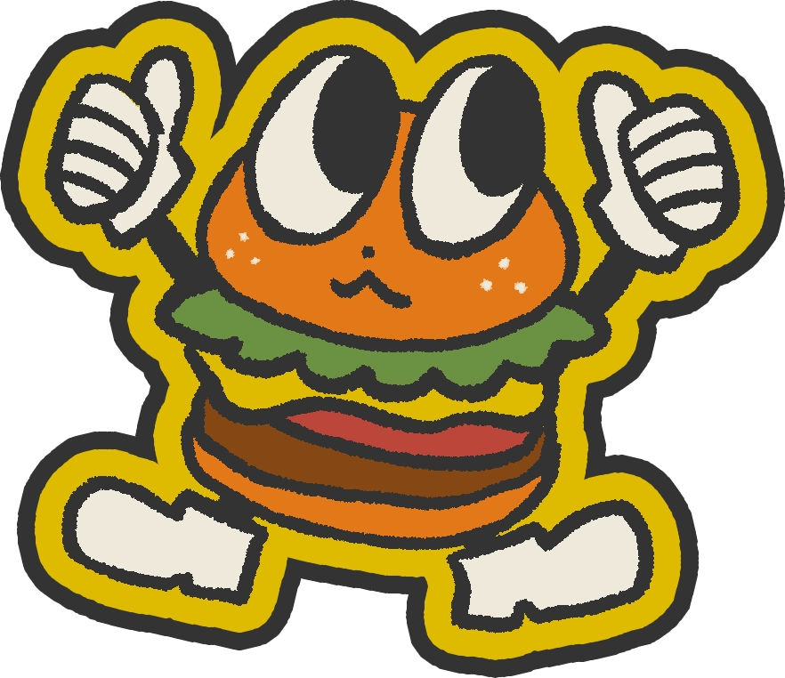
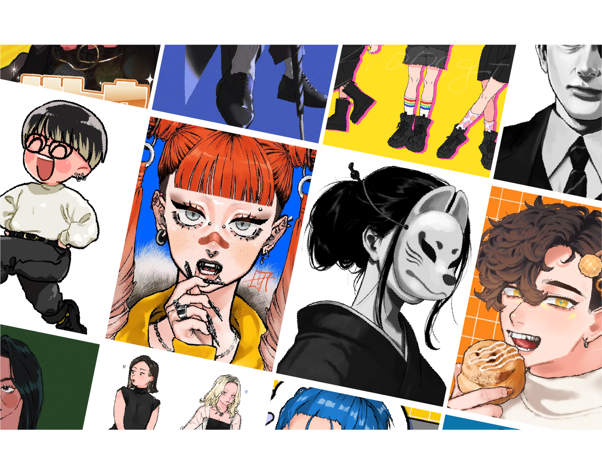
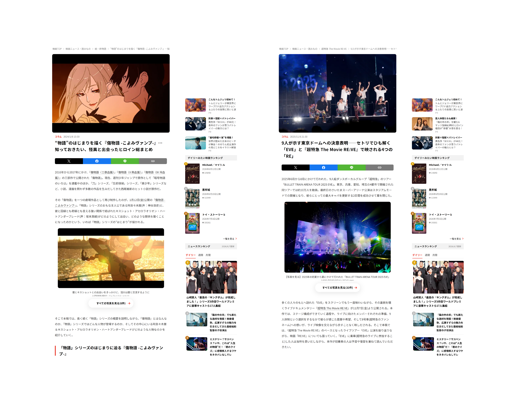

WORKS
制作物

紙版ポートフォリオ
#デザイン
#自主制作
紙媒体でのポートフォリオもあわせて制作いたしました。Webと紙で印象はそろえつつデザインは分けています。

【特集】人気のハンバーガー大解剖
#デザイン
#自主制作
架空のグルメ誌のハンバーガー特集紙面（1ページ、A4変形）を制作いたしました。

イラスト制作
#イラスト
#自主制作
#クライアントワーク
趣味や仕事でイラストを描いています。コミック風のタッチから写実的なもの、デフォルメキャラクターなど、幅広く描くことができます。

映画情報サイトコラム作成
#編集・ライティング
#クライアントワーク
映画情報サイトにて、映画コラムを執筆いたしました。各作品の魅力や、鑑賞者が期待していることをリサーチし、そこにアプローチできるよう、熱量も込めて作成しています。
ABOUT
わたし

佐藤 来海
1996年生まれ、福島県出身。高校卒業後、デザイン系専門学校でグラフィックデザインを学び、その後編集プロダクションに入社。映画やアニメ、ヘルスケア、トラベル、グルメなど様々な媒体（紙・Web）で記事の編集を担当。
現在はデザイナーに再挑戦すべく、デザインの復習とコーディングの履修に奮闘中。